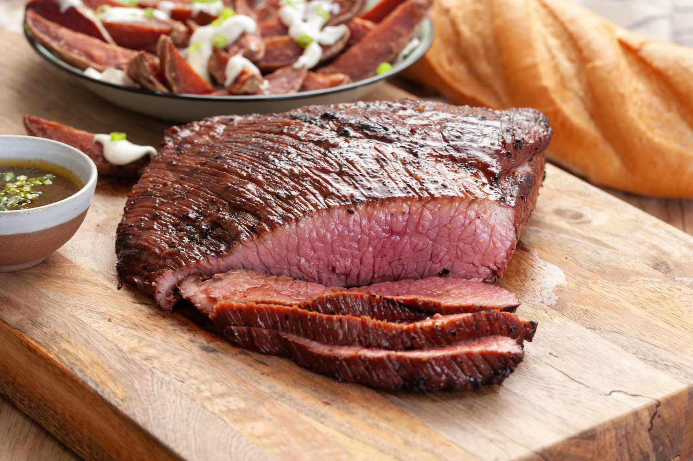

Marinated Flank Steak
Home

Description
A great flank steak marinade like this one is important if you want a tender, juicy, flavorful steak. This wonderful quick and easy recipe also works great when the steak is sliced and used for fajitas.
Ingredients
Marinade:
- 1/2 cup vegetable oil
- 1/3 cup low-sodium soy sauce
- 1/4 cup red wine vinegar
- 2 tablespoons fresh lemon juice
- 1 tablespoon Dijon mustard
- 1 1/2 tablespoons Worcestershire sauce
- 2 cloves garlic, minced
- 1/2 teaspoon ground black pepper
Steak:
Steps:
- Step 1: Gather all ingredients.
- Step 2: Whisk together oil, vinegar, lemon juice, Worcestershire sauce, Dijon mustard, garlic and pepper. Thoroughly combined.
- Step 3: Pour marinade over the steak, turn several times to coat thoroughly with marinade. Cover and refrigerate for 2 to 6 hours.
- Step 4: When ready to cook, preheat the grill for medium-high heat and lightly oil the grate.
- Step 5: Remove steak from the marinade and shake off excess.
- Step 6: Cook Steak on the preheated gull for about 5 minutes per side, ot to desired doneness.
- Step 7: Remove from the grill and let rest for 5 minuted before slicing and serving.
- Step 8: Serve hot and enjoy!